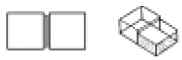
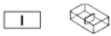
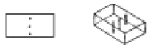
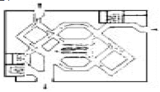
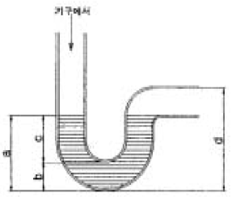

실내건축기사(구) (2005-03-06 기출문제)
1과목: 실내디자인론
1. 인간이 생활하기 위한 실내공간은 물리적ㆍ환경적ㆍ기능적조건에 영향을 받는데, 다음 중 기능적 조건에 해당되는 것은?
- 기후
- 공간규모
- 기상
- 예술성
(정답률: 54%)

2. 다음의 선에 대한 느낌의 연결이 가장 적당한 것은?
- 사선 - 고상, 방향성
- 수평선 - 변화, 세련
- 수직선 - 침착, 영원
- 곡선 - 유연, 경쾌
(정답률: 92%)
3. 실내디자인의 원리 중 조화ㆍ통일ㆍ변화에 대한 설명으로 옳지 않은 것은?
- 조화란 전체적인 조립방법이 모순없이 질서를 잡는 것을 말한다.
- 조화에는 시각적으로 동일한 요소간에 이루어지는 유사조화와 이질적인 요소간에 이루어지는 대비조화가 있다.
- 통일은 변화와 함께 모든 조형에 대한 미의 근원이 되는 원리이다.
- 통일과 변화는 각각 독립된 것으로 상호대립관계에 있다.
(정답률: 29%)
4. 공간의 최적치수 선정방법에 해당되지 않은 것은?
- 최소값 +α의 방법
- 최대값 -α의 방법
- 조정값 ±α의 방법
- 목표값 ±α의 방법
(정답률: 50%)
5. 건물과 일체화해서 만든 가구로서, 가구배치의 혼란을 없애고 공간을 최대한 활용할 수 있는 것은?
- 모듈러 가구
- 가동 가구
- 유닛 가구
- 붙박이 가구
(정답률: 58%)
6. 개보수(Renovation) 작업시 고려해야 할 사항으로 옳은 것은?
- 현장 실측 조사를 통해 기존 공간의 현황을 명확하게 파악하여야 한다.
- 기존 도면이 있을 경우 별도의 현장실측은 필요하지 않다.
- 기존 건축 구조의 영향을 전혀 받지 않는다.
- 전기 및 설비 관련사항에 대한 검토는 필요 없다.
(정답률: 82%)
7. 전시공간 전시실의 순회 유형에 대한 설명으로 옳은 것은?
- 연속 순회형 : 순서별로 관람하기 때문에 지루하나 개개의 전시실을 폐쇄시키기에 유리하다.
- 갤러리 및 복도형 : 하나의 전시실을 패쇄시키면 전체 동선의 흐름이 막히게 되므로 비교적 소규모 전시실에 적합하다.
- 중앙홀형 : 중앙홀이 크면 동선의 혼란은 없으나 장래의 확장에는 무리가 있다.
- 갤러리 및 복도형 : 별도의 전시실 없이 복도만을 전시장으로 사용하며 뉴욕의 근대미술관, 구겐하임 미술관 등이 대표적이다.
(정답률: 42%)
8. 다음 중 인간과 실내환경의 이론 중 행태학을 가장 올바르게 설명한 것은?
- 인간 신체의 해부학적 특성을 디자인에 적용시키기위한 연구
- 인간의 시각, 청각, 촉각적 특징을 디자인에 적용시키기 위한 연구
- 환경에서 인간의 잠재적 심리상태를 패턴화하여 디자인에 적용시키기 위한 연구
- 인간의 지각, 심리, 행동의 특질을 패턴화하여 디자인에 적용시키기 위한 연구
(정답률: 78%)
9. 아트리움(Atrium)에 대한 설명으로 가장 알맞은 것은?
- 자연광을 실내에 유입시켜 실내속에 옥외공간의 분위기를 조성하여 휴식공간으로 제공한다.
- 오피스 작업을 사람의 흐름과 정보의 흐름을 매체로 효율적인 네트워크가 되도록 배치하는 배치방법이다.
- 오피스에서 업무를 수행하는 사람이 업무수행을 효율적으로 하기 위하여 필요한 기기, 가구, 집기를 포함하는 최소단위의 기능공간이다.
- 집회기능을 해결하기 위한 개방된 실내공간이다.
(정답률: 50%)
10. 다음 그림 중 공간과 공간의 표현이 잘못 연결된 것은?



(정답률: 77%)
11. 다음의 디자인 요소에 관한 설명 중 옳지 않은 것은?
- 선은 어떤 형상을 규정하거나 한정하고, 면적을 분할한다.
- 점은 선의 교차, 선의 굴절, 면과 선의 교차 등에서 나타난다.
- 면은 선이 확장되어 만들어지며, 길이와 넓이는 있으나 깊이가 없다.
- 가구, 기둥이나 계단 등의 건축적 요소, 건축물들은 2차원적 형상이다.
(정답률: 75%)
12. 다음 중 리듬의 효과를 위해 사용되는 요소가 아닌 것은?
- 강조(emphasis)
- 반복(repetition)
- 교차(alternation)
- 점진(gradation)
(정답률: 32%)
13. 다음 중 전시에 대한 설명으로 가장 알맞은 것은?
- 전시용도만을 위해 설계된 전시 전용공간에서만 이루어진다.
- 일반적으로 전시는 감상, 교육, 계몽의 역할을 한다.
- 전시공간은 호환성이 없는 고정형이어야만 한다.
- 전시는 실내공간에 국한되어 이루어진다.
(정답률: 84%)
14. 실내디자인 과정 중 조건 설정 단계에서 고려할 요소가 아닌 것은?
- 의뢰자의 요구사항
- 의뢰자의 예산 및 경제성
- 주어진 공간의 합리적 동선
- 설계대상에 대한 계획의 목적
(정답률: 60%)
15. 질감에 관한 설명 중 옳지 않은 것은?
- 질감은 어떤 물체가 갖고 있는 표면적 특질을 말하며 감촉적인 것과 시각적인 것의 두 가지 영역으로 구분할수 있다.
- 질감 선택시 고려해야 할 사항은 빛의 반사와 흡수, 촉감 등의 요소이다.
- 매끄러운 질감은 빛을 반사하여 밝고 환한 시각적 느낌을 준다.
- 거친 질감은 빛을 흡수하여 가볍고 안정된 시각적 느낌을 준다.
(정답률: 70%)
16. 조명의 배광방식에 대한 설명 중 옳지 않은 것은?
- 직접조명 방식은 경제적이지만 눈부심 현상과 강한 그림자가 생기는 단점이 있다.
- 반간접조명은 조도가 균일하고 은은하며 전반확산조명이라고도 한다.
- 간접조명은 상향광속이 90∼100%로, 반사광으로 조도를 구하는 조명방식이다.
- 반직접조명은 마감재의 반사율에 의해 밝기의 정도가 영향을 받게 되므로 마감재의 질감과 색채 등을 고려한다.
(정답률: 50%)
17. 실내디자인의 영역에 대한 설명 중 알맞지 않는 것은?
- 대상 공간의 생활 목적에 따라 주거공간, 사무공간, 상업공간, 전시공간, 특수공간으로 나눌 수 있다.
- 영리성 유무에 따라 영리공간과 비영리공간으로 구분할수 있다.
- 건축 구조물에 의해 형성된 내부공간만을 대상으로 한다.
- 가구 디자인도 실내 디자인의 영역에 포함되나 독립적으로 이루어질 수도 있다.
(정답률: 72%)
18. 한국의 전통가구 중 장에 대한 설명으로 옳지 않은 것은?
- 단층장은 머릿장이라고도 불리운다.
- 이층장이나 삼층장은 보통 남성공간인 사랑방에서 사용되었다.
- 이불장은 금침과 베개를 겹겹이 쌓아두는 장으로 보통 2층으로 된 것이 많다.
- 의걸이장은 외관의장에 따라 만살의걸이, 평의걸이, 지장의걸이로 구분할 수 있다.
(정답률: 82%)
19. 다음 그림과 같이 백화점 매장의 사행배치에 적합한 동선 계획으로 45°의 구성에 의하여 상품의 벽면전시를 중시하는 동선의 유형은?

- 스퀘어 타입
- 엔클로저 타입
- 바이어스 타입
- 방사배치형
(정답률: 12%)
20. 다음 중 장식조명과 가장 관계가 먼 것은?
- 브라켓(bracket)
- 펜던트(pendent)
- 픽토그램(pictogram)
- 샹들리에(chandelier)
(정답률: 86%)
2과목: 색채학
21. 오스트발트의 조화론 중 등백계열조화에 해당되는 것은?
- pa-ia-ca
- pa-pg-pn
- ca-ga-ge
- gc-lg-pl
(정답률: 55%)
22. 문·스펜서의 색채조화에 사용하지 않은 조화는?
- 동등 조화
- 유사 조화
- 대비 조화
- 윤성 조화
(정답률: 43%)
23. 관용색명에 대한 설명이 아닌 것은?
- 고대색명과 현대색명으로 나눌 수 있다.
- 계통색명을 말한다.
- 동물이나 식물 등에서 따온 색명을 말한다.
- 옛날부터 습관상 사용하는 색명을 말한다.
(정답률: 알수없음)
24. 황색이나 레몬색을 보면 과일이 느껴지는 색의 감각적 효과는?
- 시인성
- 상징성
- 공감각
- 시감도
(정답률: 50%)
25. 인접한 색과 비슷하게 변해 보이는 현상은?
- 잔상
- 연변대비
- 동화현상
- 푸르킨예현상
(정답률: 64%)
26. 색채와 언어에 관한 설명으로 틀린 것은?
- 빨강 : 사랑과 증오, 투쟁, 경축일, 금전적 적자를 나타낸다.
- 노랑 : 미국에서는 비겁함, 겁쟁이, yellow journalism 등 경멸의 의미로 쓰이기도 한다.
- 녹색 : 자연, 안전, 지성의 의미 뿐 아니라 질투, 풋내기를 표현하기도 한다.
- 파랑 : 절망과 악의를 나타내거나 극도의 분노를 뜻한다.
(정답률: 84%)
27. 한국산업규격의 안전색채에 있어서, 대피장소 및 비상구를 표시하는 색채는?
- 빨강
- 노랑
- 녹색
- 흰색
(정답률: 79%)
28. 색채가 주는 효과에 관한 설명 중 잘못된 것은?
- 난색, 고채도일수록 무거운 느낌이다.
- 저채도, 저명도일수록 어두운 느낌이다.
- 고채도, 고명도일수록 화려한 느낌이다.
- 한색, 저채도일수록 차분한 느낌이다.
(정답률: 74%)
29. 분광반사율이 다른 두 가지의 색이 어떤 광원 아래서 같은 색으로 보이는 현상은?
- 메타메리즘
- 등색
- 색지각
- 색순응
(정답률: 36%)
30. 다음 감산혼합의 결과 중 가장 채도가 높은 것은?
- 주황의 순색에 흰색을 혼합한 색
- 빨강과 녹색의 순색에 흰색을 혼합한 색
- 주황의 순색에 밝은 회색을 혼합한 색
- 빨강과 노랑의 순색에 밝은 회색을 혼합한 색
(정답률: 62%)
31. 가법혼색이란?
- 마젠타(Magenta), 노랑(Yellow), 시안(Cyan)이 기본색인 안료의 혼합이다.
- 빨강, 녹색, 파랑이 기본인 색광혼합이다.
- 기본색을 혼합하면 더 어둡고 칙칙해진다.
- 마이너스 효과라고도 한다.
(정답률: 50%)
32. 다음 중 무채색에 대한 설명으로 맞는 것은?
- 채도는 없고 색상, 명도만 있다.
- 색상은 없고 명도, 채도만 있다.
- 색상, 명도가 없고 채도만 있다.
- 색상, 채도가 없고 명도만 있다.
(정답률: 29%)
33. 색의 전달을 위한 표시 방법 중 1931년 국제 조명위원회에 의하여 결정한 가장 과학적이고 국제적 기준이 되는 색표시 방법은?
- CIE 측색법
- 먼셀 표색법
- 오스트발트 표색법
- ISCC-NBS 색명법
(정답률: 36%)
34. 인쇄에 있어서 망점에 관한 설명 중 틀린 것은?
- 망점은 % 로 나타낸다.
- 망점은 입체감을 나타낸다.
- 망점이 0 % 나 100 % 인 경우에는 중간계조의 농도를 나타낸다.
- 컬러 인쇄물(4 color)은 대부분 망점으로 형성되어 있다.
(정답률: 17%)
35. 색채조절의 효과가 아닌 것은?
- 안전성, 명시성이 높아진다.
- 요란해서 피곤해진다.
- 생산성이 향상된다.
- 눈의 피로를 막는다.
(정답률: 60%)
36. 강함, 똑똑함, 화려함 등을 느낄 수 있는 배색은?
- 동일 색상의 배색
- 유사 색상의 배색
- 반대 색상의 배색
- 유사 색조의 배색
(정답률: 73%)
37. 다음 스펙트럼상에 나타난 색 중 단파장에서 부터 장파장의 순서로 바르게 배열된 것은?
- 빨강 - 노랑 - 녹색 - 보라
- 빨강 - 녹색 - 보라 - 노랑
- 보라 - 녹색 - 노랑 - 빨강
- 보라 - 노랑 - 녹색 - 빨강
(정답률: 61%)
38. 미도(美度) M=O/C 라는 버어크호프(G.D.Birkhoff)공식에서 O는 질서성의 요소일때, C는?
- 복잡성의 요소
- 대비성의 요소
- 색온도의 요소
- 색의 중량적 요소
(정답률: 30%)
39. 어두운 색 가운데서 대비되어진 밝은색은 한층 더 밝게 느껴지고, 밝은색 가운데 있는 어두운 색은 더욱 어둡게 느껴지는 현상은?
- 동화 현상
- 색상 대비
- 명도 대비
- 채도 대비
(정답률: 75%)
40. 음성적 잔상이란?
- 원래의 감각과 반대의 밝기 또는 색상을 가지는 잔상
- 원래의 감각과 같은 질의 밝기 또는 색상을 가지는 잔상
- 원래의 색상과 다른 무채색으로 나타나는 잔상
- 원래색상의 밝기 또는 색상이 약하게 나타나는 잔상
(정답률: 48%)
3과목: 인간공학
41. 다음 중 소음이 작업능률에 미치는 영향이 아닌 것은?
- 간헐소음이나 충격소음은 정상소음에 비해 방해가 크다
- 무의미 정상소음은 음압수준 90dB를 넘지 않는 한 작업 능률에는 영향을 미치지 않는다.
- 저주파 소음보다는 2,000Hz를 넘는 고주파 성분을 지닌 소음이 작업능률에 영향을 미친다.
- 소음은 작업의 정확성보다 전체 작업량에 많은 영향을 미친다.
(정답률: 56%)
42. 연속적으로 변화하는 값을 표시하기에 가장 적합한 표시장치(display)는?
- 동침형 (moving pointer)
- 동목형 (moving scale)
- 계수형 (digital)
- 회화형 (pictogram)
(정답률: 65%)
43. 시식별에 영향을 주는 조건이 아닌 것은?
- 색온도 (color temperature)
- 대비 (contrast)
- 조도 (illuminance)
- 휘광 (glare)
(정답률: 47%)
44. 소리를 구성하는 3개의 물리량이 아닌 것은?
- 진동수
- 강도 또는 음량
- 가청최소음
- 계속시간
(정답률: 53%)
45. "phon"에 관한 설명 중 틀린 것은?
- 음의 크기 레벨이다.
- 1000㎐의 정현파이다.
- X㏈과 같은 크기로 들리는 임의의 소리는 X폰 크기의 레벨이라고 한다.
- 1000㎐의 100㏈강도의 소리이다.
(정답률: 39%)
46. 역치(threshold)에 관한 설명 중 옳은 것은?
- 오래 지속된 자극의 감각이 소멸되는 현상
- 감각을 일으키는 것이 가능한 최소의 자극강도
- 감각기관에서 느끼는 자극의 최대 한계
- 반복되는 자극이 감각기관에 끼치는 피해 정도
(정답률: 70%)
47. 인간공학적인 디자인에서 고려하여야할 대상 집단은?
- 50 퍼센타일 (백분위수)
- 5 퍼센타일
- 95 퍼센타일
- 5 - 95 퍼센타일
(정답률: 79%)
48. 소음에 의한 생체부담의 생리적 영향에 해당되지 않는 것은?
- 말초혈관 수축
- 혈압상승
- 호흡수의 증가
- 음의 높낮이 간격 상승
(정답률: 60%)
49. 다음 중 가속도가 +Gx로 작용하는 자동차 속에서 안구의 운동방향은? (단, 운동방향은 앞으로 진행함)
- 속으로
- 밖으로
- 좌로
- 우로
(정답률: 35%)
50. 촉각의 특성에 관한 설명 중 잘못된 것은?
- 민감도가 부위에 따라 다르다.
- 온도감각, 통각 등의 감각과 독립적으로 분리될 수 없다.
- 시각에 비해 입체감 파악이 느리다.
- 접촉 후 반사적으로 판단한다.
(정답률: 69%)
51. 다음은 시각 표시장치 설계형에 따른 특성이다. 옳지 않은 것은?
- 수치를 정확히 읽어야 할 경우는 계수형(計數型, digital)표시장치가 적합하다.
- 계수형(計數型, digital)표시장치의 판독오차는 원형 표시장치보다 많다.
- 동침형(動針型, moving pointer)표시장치는 인식적인 암시 신호(cue)를 준다.
- 사각 개창형(開窓型)이나 수직, 수평형태 동목형(動目型, moving scale)이 동침형(動針型, moving pointer)에 비해 계기반의 공간을 적게 차지한다.
(정답률: 알수없음)
52. 혀가 느낄수 있는 미각의 강도가 가장 큰 맛은?
- 신맛
- 단맛
- 짠맛
- 쓴맛
(정답률: 19%)
53. 실내조명의 반사율을 80-90% 정도로 유지해야 하는 부분은?
- 바닥
- 천정
- 벽
- 가구
(정답률: 75%)
54. 물체를 위치시키는 동작에 관한 설명으로 틀린 것은?
- 최초 반응시간은 이동 거리에 따라 다르다.
- 동작시간은 거리의 함수이기는 하나, 비례하지는 않는다.
- 위치동작의 시간과 정확도는 그 방향에 따라서 달라진다.
- 동작을 보면서 통제할 수 없는 경우를 맹목 위치 동작이라 한다.
(정답률: 0%)
55. 다음 조명과 관련된 설명 중 가장 올바른 것은?
- 실내의 빛을 효과적으로 배분하기 위해서는 반사율이 높은 표면이 좋다.
- 주어진 장소와 주위의 광도(luminance) 비율은 사무실에서 보통 3:1이다.
- 실내 면의 추천 반사율은 천장에서 바닥으로 갈수록 증가하는 것이 좋다.
- 광원으로 부터의 직사휘광을 처리하는 방법은 광원의 휘도를 늘이고 수를 줄인다.
(정답률: 63%)
56. 시력 1.0 이란 어떠한 의미인가?
- 가장 눈이 좋은 사람을 2.0 이라 할 때 그 절반인 시력
- 최소 공간 식별각이 1분(分)인 시력
- 수정체의 굴절력이 10디옵터인 시력
- 시력측정표를 안경 없이 읽을 수 있는 시력
(정답률: 50%)
57. 인체의 구조 중에서 골격계(Skeletal system)와 어떤계를 합쳐 운동기관계라 하는가?
- 근육계(Muscular system)
- 소화기계(Digestive system)
- 신경계(Nervous system)
- 기초대사(Basal metabolism)
(정답률: 64%)
58. 계기판의 형(型)가운데 측정치의 평가, 즉 목표치로 부터의 편차(偏差)나 편차의 방향 평가에 가장 적합한 형은?
- 가동지침(可動指針 : 눈금은 고정)
- 고정지침(固定指針 : 눈금은 가동)
- 계수기
- 계수기와 가동지침의 겸용
(정답률: 알수없음)
59. 인간 실수 예방기법이 아닌 것은?
- 작업상황 개선
- THERP
- 작업요원 변경
- 체계의 영향감소
(정답률: 22%)
60. 벨트(belt)로 좌석에 묶여있는 작업자의 제어장치는 작업자의 어깨에서 어느 정도의 거리가 이상적인가?
- 30cm 이내
- 70cm 이내
- 100cm 이내
- 130cm 이내
(정답률: 50%)
4과목: 건축재료
61. 창호 철물에 대한 설명 중 틀린 것은?
- 도어 체크(door check)는 열려진 여닫이문이 저절로 닫아지게 하는 장치이다.
- 플로어 힌지(floor hinge)는 자재여닫이문에 사용된다.
- 도어 스톱(door stop)은 문짝을 문틀에 달아 여닫는축이 되는 것이다.
- 크레센트(crescent)는 오르내리창을 잠그는데 사용된다.
(정답률: 48%)
62. 석고 및 석고플라스터에 관한 설명 중 옳지 않은 것은?
- 회반죽에 석고를 약간 혼합하면 수축균열을 방지할수 있는 효과가 있다.
- 무수석고는 경화가 늦기 때문에 경화촉진제를 필요로 한다.
- 석고플라스터는 약산성이므로 유성페인트의 마감을 할 수 있다.
- 석고는 경화시 결정이 교착되어 수축하기 때문에 잔골재를 혼입해야 한다.
(정답률: 50%)
63. 다음 중 점토제품이 아닌 것은?
- 경량벽돌
- 테라코타
- 슬레이트
- 위생도기
(정답률: 13%)
64. 마루판 재료 중 파키트 보드를 3~5장씩 상호접합하여 각판으로 만들어 방습처리한 것으로 모르타르나 철물을 사용하여 콘크리트마루바닥용으로 사용되는 것은?
- 파키트 패널
- 파키트 블록
- 플로링 보드
- 플로링 블록
(정답률: 32%)
65. 회반죽 바름을 한 벽체는 공기 중의 어느 것과 반응하여 화학변화를 일으켜 경화하는가?
- 탄산가스
- 산소
- 질소
- 수소
(정답률: 63%)
66. 다음 중 동과 그 합금에 대한 설명으로 옳지 않은 것은?
- 동은 상온의 건조공기 중에서 변화하지 않으나 가열하거나 습기가 있으면 변색된다.
- 황동은 동과 아연을 주체로 한 합금으로 장식철물 등에 이용된다.
- 황동은 산, 알칼리 및 암모니아에 침식되지 않는다.
- 청동은 동과 주석을 주체로 한 합금으로 황동보다 내식성이 크며 주조하기 쉽다.
(정답률: 58%)
67. 콘크리트용 골재에 대한 설명 중 틀린 것은?
- 입형과 입도가 좋은 골재는 실적율이 작고 동일 슬럼프를 얻기 위한 단위수량이 크다.
- 골재의 입도를 수치적으로 나타내는 지표로서는 조립률이 이용된다.
- 골재의 흡수율은 표건상태일 때에 포함하고 있는 수량을 절건중량으로 나눈 값의 백분율이다.
- 콘크리트용 골재의 입형은 편평, 세장하지 않은 것이 좋다.
(정답률: 14%)
68. 석재에 대한 설명 중 옳지 않은 것은?
- 화강암은 화성암으로 고온의 화재에도 강도 저하가 거의 없는 내화재료이다.
- 외장용으로는 화강암, 안산암, 점판암이 있고, 내장용에는 대리석, 사문암 등이 있다.
- 대리석은 석회암이 변화되어 결정화한 것으로 주성분은 탄산석회이다.
- 일반적으로 규산분을 많이 함유한 석재는 내산성이 크고 석회분을 포함한 것은 내산성이 적다.
(정답률: 0%)
69. 금속부식에 대한 대책으로 틀린 것은?
- 가능한 상이한 금속은 이를 인접, 접속시켜 사용하지 않는다.
- 균질한 것을 선택하고 사용할 때 큰 변형을 주지 않도록 한다.
- 큰 변형을 준 것은 가능한 불림하여 사용한다.
- 표면은 평활, 청결하게 하고 가능한 한 건조상태로 유지한다.
(정답률: 62%)
70. 목재의 절건비중이 0.45일 때 목재내부의 공극율로 적당한 것은?
- 10%
- 30%
- 50%
- 70%
(정답률: 17%)
71. 접착제에 대한 설명 중 옳지 않은 것은?
- 에폭시 접착제는 기본 점성이 크며 내수성, 내약품성, 전기절연성이 모두 우수하다.
- 비닐수지 접착제는 목재, 창호, 종이 등의 접합에 사용된다.
- 건축공사에 주로 사용되는 접착제는 초산비닐수지와 에폭시 수지이다.
- 네오프렌은 내수, 내화학성이 우수한 접착제로 석유계 용제에 잘 녹는다.
(정답률: 28%)
72. 평판성형되어 글라스와 같이 이용되는 경우가 많고 유기글라스라고도 불리우는 것은?
- 페놀수지
- 폴리에틸렌수지
- 요소수지
- 아크릴수지
(정답률: 59%)
73. 플라스틱 재료에 관한 설명 중 틀린 것은?
- 아크릴수지의 성형품은 색조가 선명하고 광택이 있어 아름다우나 내용제성이 약하므로 상처나기 쉽다.
- 폴리에틸렌수지는 상온에서 유백색의 탄성이 있는 수지로서 얇은 시트로 이용된다.
- 실리콘수지는 발포제로서 보드상으로 성형하여 단열재로 널리 사용된다.
- 염화비닐수지는 P.V.C라고 칭하며 내산ㆍ내알칼리성 및 내후성이 우수하다.
(정답률: 17%)
74. 다음 제품의 품질시험으로 틀린 것은?
- 타일 : 흡수율
- 벽돌 : 흡수율과 압축강도
- 내화벽돌 : 내화도
- 기와 : 흡수율과 인장강도
(정답률: 53%)
75. 건축물의 창호나 죠인트의 충전재로서 사용되는 실(seal)재에 대한 설명 중 잘못된 것은?
- 탄산칼슘, 연백, 아연화 등의 충전재를 각종 건성유로 반죽한 것을 퍼티(putty)라 한다.
- 석면, 탄산칼슘 등의 충전재와, 천연유지나 폴리우레탄 수지 등을 혼합한 것을 유성코킹재라 하며 접착성, 가소성, 유연성이 풍부하다.
- 2액형 실링재는 휘발성분이 거의 없어 충전 후의 체적변화가 적고 온도변화에 따른 안정성도 우수하다.
- 전색재로서 블로운 아스팔트를 사용한 아스팔트성 코킹재는 고온에 강하며 창유리 등의 새시 설치에 주로 사용된다.
(정답률: 18%)
76. 단열재료에 관한 설명으로 옳지 않은 것은?
- 단열재료는 보통 다공질의 재료가 많으며, 열전도율이 낮을수록 단열성능이 좋은 것이라 할 수 있다.
- 암면은 변질되지 않고 내구성이 뛰어나지만, 불에 타고 무겁다는 단점이 있다.
- 단열재료의 대부분은 흡음성도 우수하므로 흡음재료로서도 이용된다.
- 유리면은 일반적으로 결로수가 부착하면 단열성이 크게 저하되므로 방습성이 있는 시트로 감싼 상태에서 사용된다.
(정답률: 45%)
77. 목재는 함수율이 섬유포화점 이상에서는 강도가 일정하나 그 이하에서는 함수율의 감소에 따라 강도가 증대한다. 이섬유포화점의 함수율은 얼마 정도인가?
- 10%
- 20%
- 30%
- 40%
(정답률: 38%)
78. 다음 중 목부와 철부 양쪽 모두에 사용할 수 있는 도료와 가장 거리가 먼 것은?
- 락카에나멜
- 멜라민수지도료
- 유성페인트
- 에나멜페인트
(정답률: 32%)
79. 콘크리트의 워커빌리티(Workability)에 대한 설명으로 옳지 않은 것은?
- 일반적으로 부배합의 경우가 빈배합의 경우보다 워커 빌리티가 좋다.
- 공기량의 워커빌리티 개선효과는 빈배합의 경우에 현저하다.
- 시멘트의 분말도가 높을수록 워커빌리티가 증대한다.
- 과도하게 비빔시간이 길면 시멘트의 수화를 촉진하여 워커빌리티가 나빠진다.
(정답률: 48%)
80. 시멘트의 발열량을 저감시킬 목적으로 제조한 시멘트로 수축이 작고 화학저항성이 일반적으로 크며 내황산염성이 있으며, 주로 매스콘크리트용으로 사용되는 것은?
- 중용열포틀랜드시멘트
- 조강포틀랜드시멘트
- 백색포틀랜드시멘트
- 팽창시멘트
(정답률: 70%)
5과목: 건축일반
81. 벽돌벽체에 대한 설명 중 옳지 않은 것은?
- 밑층의 벽돌벽은 그 위층의 벽두께보다 얇게 하지 않는다.
- 각 층의 대린벽으로 구획된 벽에서는 문꼴의 나비의 합계는 그 벽길이의 1/2 이하로 한다.
- 창문, 기타 문꼴은 벽의 한 곳에 집중하여 배치하는 것이 좋다.
- 벽돌벽의 길이는 벽에 교차하는 벽 또는 붙임기둥, 부축벽의 중심간을 말한다.
(정답률: 69%)
82. 비상용승강기의 설치에 관한 기준 중 옳지 않은 것은?
- 높이 41m를 넘는 각층을 거실 외의 용도로 쓰는 건축물에는 비상용 승강기를 설치하지 아니할 수 있다.
- 높이 41m를 넘는 각층의 바닥면적의 합계가 1,000m2이하인 건축물에는 비상용 승강기를 설치하지 아니할수 있다.
- 옥내 승강장의 바닥면적은 비상용승강기 1대에 대하여 6m2 이상으로 한다.
- 승강로는 당해 건축물의 다른 부분과 내화구조로 구획하여야 한다.
(정답률: 22%)
83. 판매 및 영업시설 중 상점의 바닥면적이 최대인 층이600m2일 때 피난층의 바깥쪽으로의 출구의 유효너비의 합계는 최소 얼마 이상으로 하여야 하는가?
- 1.2m
- 2.4m
- 3.6m
- 4.8m
(정답률: 57%)
84. 건축물의 바깥쪽으로 나가는 출구를 설치하여야 하는 대상 건축물이 아닌 것은?
- 의료시설 중 장례식장
- 위락시설
- 전시장
- 승강기를 설치하여야 하는 건축물
(정답률: 43%)
85. 서양 고전건축의 기둥과 가장 관계가 먼 것은?
- 필라스터 (Pilaster)
- 컬럼 (Column)
- 린텔 (Lintel)
- 필라 (Pillar)
(정답률: 20%)
86. 계단 및 계단참의 너비(옥내계단에 한함)가 최소 150cm 이상이어야 하는 것은?
- 초등학교의 학생용 계단
- 집회장의 계단
- 판매 및 영업시설 중 도매시장의 계단
- 바로 윗층의 거실의 바닥면적의 합계가 200m2 이상인 지하층의 계단
(정답률: 43%)
87. 르 꼬르비제가 주장한 근대건축 5원칙과 가장 관계가 먼 것은?
- 중정
- 필로티
- 자유로운 평면
- 옥상 정원
(정답률: 9%)
88. 다음 중 바닥과 그 바닥으로부터 높이 1m까지의 안벽의 마감을 내수재료로 하여야 하는 대상이 아닌 것은?
- 제1종 근린생활시설 중 일반목욕장의 욕실
- 제2종 근린생활시설 중 세탁소의 세탁장
- 제2종 근린생활시설 중 일반음식점의 조리장
- 숙박시설의 욕실
(정답률: 60%)
89. 한 켜에서 마구리와 길이를 번갈아 놓아 쌓고, 다음 켜는 마구리가 길이의 중심부에 놓이게 쌓는 것으로 통줄눈이 생겨서 강도는 약하지만 외관을 중요시 하는 곳에 이용되는 벽돌쌓기법은?
- 영식쌓기
- 불식쌓기
- 화란식쌓기
- 미식쌓기
(정답률: 24%)
90. 비상경보설비를 설치하여야 할 특정소방대상물이 아닌 것은?
- 지하층의 바닥면적이 150m2 이상인 것
- 50인 이상의 근로자가 작업하는 옥내작업장
- 무창층의 바닥면적이 100m2 이상인 것
- 지하가 중 터널로서 길이가 500m 이상인 것
(정답률: 32%)
91. 펜덴티브에 의해 지지된 돔(dome)을 가진 성 소피아 성당과 가장 관계가 깊은 것은?
- 비잔틴 건축
- 그리이스 건축
- 초기 기독교 건축
- 로마네스크 양식
(정답률: 59%)
92. 철근콘크리트구조 각 부의 배근에 대한 설명 중 옳지 않은 것은?
- 단순보의 주근은 중앙부에서는 하부에 많이 넣는다.
- 단순보의 주근은 양단부에서는 상부에 많이 넣는다.
- 단순보의 늑근(stirrup)은 양단부에서는 중앙부보다 좁게 넣는다.
- 슬래브(slab)의 주근은 장변 방향으로 많이 넣는다.
(정답률: 24%)
93. 보통 철근콘크리트조 기둥의 압축이형철근의 겹침이음길이는 최소 얼마 이상으로 하는가?
- 200mm
- 300mm
- 400mm
- 500mm
(정답률: 42%)
94. 고대 메소포타미아 건축의 특징에 대한 설명 중 옳지 않은 것은?
- 신전이 주된 건축 유형이었다.
- 지구랏트는 정사각형에 기초한 중앙집중형 배치이다.
- 석재가 주된 건축재료였다.
- 주택에는 아치형이나 볼트형 지붕이 사용되었다.
(정답률: 16%)
95. 조선시대 건축에서 사용된 실내 장식물이 아닌 것은?
- 잡상
- 닷집
- 일월오악병
- 보개(寶蓋)
(정답률: 25%)
96. 근린생활시설 중 헬스클럽장에서 사용하는 물품 중 방염성능기준 이상이어야 하는 방염대상물품이 아닌 것은?
- 창문에 설치하는 커텐
- 실내장식물
- 전시용 합판
- 소파
(정답률: 27%)
97. 공동주택의 거실에 설치하는 자연채광을 위한 창문의 면적은 그 거실의 바닥면적의 얼마 이상이어야 하는가?
- 1/5
- 1/10
- 1/20
- 1/30
(정답률: 70%)
98. 르네상스에 관한 설명 중 옳지 않은 것은?
- 이탈리아에서 발생하여 각지에 전파되었다.
- 양식의 특징은 포인티드 아치, 플라잉 버트레스, 리브 볼트로 압축될 수 있다.
- 인본주의에서 출발하였다.
- 중세 때보다 훨씬 광범위하게 가구가 사용되었다.
(정답률: 39%)
99. 왕대공 지붕틀의 부재 중 인장재가 아닌 것은?
- ㅅ자보
- 평보
- 왕대공
- 달대공
(정답률: 알수없음)
100. 철근콘크리트구조 기둥의 단면치수는 최소 얼마 이상으로 해야 하는가?
- 450mm
- 400mm
- 300mm
- 200mm
(정답률: 12%)
6과목: 건축환경
101. 자연환기에 대한 설명이다. 틀린 것은?
- 환기회수란 실내면적을 소요공기량으로 나눈 값이다.
- 실내온도가 실외온도보다 낮으면 상부에서는 실외공기가 유입되고 하부에서는 실내공기가 유출된다.
- 최근의 고단열, 고기밀 건축물은 열효율면에서는 유리하나 자연환기에서는 불리하다.
- 실내에 바람이 없을 때 실내외의 온도차가 클수록 환기량은 많아진다.
(정답률: 20%)
102. 입사방향에 의한 라이팅의 조명연출 설명으로 맞는 것은?
- 순광(Frontal light)은 불필요한 그림자가 있다.
- 실루엣(Silhouette)이라는 것은 배경은 어둡고 물체는 밝게하는 것이다.
- 언더라이트(Under light)를 설치하면 사람의 머리와 코근처 또는 어깨만 빛난다.
- 측광(Side light)은 나무결이나 돌표면의 표현에 적당하다.
(정답률: 45%)
103. 다음 그림은 트랩을 나타낸 것이다. 봉수깊이는 어디인가?

- a
- b
- c
- d
(정답률: 16%)
104. 인체에 심각한 피해를 줄 수 있는 주파수 대열은 어느 것인가?
- 5 - 10Hz
- 20 - 50Hz
- 10,000 - 20,000Hz
- 30,000 - 50,000Hz
(정답률: 13%)
1⑤. 건축화 조명에 대한 설명 중 옳지 않은 것은?
- 다운라이트는 천장면이 어두워지는 것이 결점이나 동적인 실내공간을 만들어 준다.
- 광천장 조명은 그림자 없는 쾌적한 빛을 얻을 수 있다.
- 코브라이트 조명은 천장과 벽의 재료, 색, 마감에 따라여러가지의 조명효과를 얻을 수 있다.
- 라인라이트 조명은 형광등을 이용하면 높은 조도를 얻을 수 있다.
(정답률: 48%)
106. 다음 중 열 복사의 성질과 관계없는 것은?
- Stefan-Boltzmann법칙
- Kirchhoff법칙
- 표면의 흡수율
- Newton의 냉각법칙
(정답률: 20%)
107. 기후도의 하나로 세로축에는 월평균기온, 가로축에는 월평균상대습도(%)를 표시하여 기온과 습도에 의해 기후를 파악할 수 있도록 만든 것은?
- 클라이모 그래프
- 하이더 그래프
- 생체기후도
- 복합기후도
(정답률: 30%)
108. 다음 중 음향 장애현상에 속하지 않는 것은?
- 음의 반향
- 음의 공명
- 음의 음영
- 음의 잔향
(정답률: 31%)
109. 열쾌적에 대한 기술 중 옳지 않은 것은?
- 건구온도의 최적범위는 약 16℃∼28℃ 이다.
- 추울 때 습도가 높으면 더욱 춥게 느껴진다.
- 실내에 공기의 흐름이 전혀 없는 경우 천장부분과 바닥부분에 공기층의 분리현상이 생긴다.
- 더운 상태에서는 대개 풍속 1m/s 정도에서 쾌적함을 느낀다.
(정답률: 54%)
110. 다음 재료 중 음속이 큰것부터 작은것으로 차례대로 되어있는 것은?
- 대리석→소나무→물→철
- 철→대리석→소나무→물
- 소나무→물→철→대리석
- 물→철→대리석→소나무
(정답률: 24%)
111. 공기환경의 설명 중 틀린 것은?
- 환기는 자연환기와 기계환기를 적절히 고려하여 설계한다.
- 실내는 최적의 환기가 되도록 환기계획을 한다.
- 오염물질의 발생이 적은 재료를 사용한다.
- 휘발성 유기화합물(VOC)은 주로 실외에 영향을 미치는 오염물질이다.
(정답률: 77%)
112. 사막과 같은 고온건조 기후조건에 적용된 건축계획의 요점에 해당되지 않는 것은?
- 지붕 및 외벽의 색채는 가능한 밝은 것이 좋다.
- 건물의 배치는 밀집시키는 것이 좋다.
- 외벽의 벽체는 축열벽 구조로 하는 것이 좋다.
- 외벽의 개구부는 가능한 넓게 뚫는 것이 좋다.
(정답률: 20%)
113. 착의량의 총 열저항값은 각 의복의 열저항값을 합산한 후, 어느 계수를 곱하여 구하는가?
- 1.21
- 1.02
- 0.82
- 0.61
(정답률: 18%)
114. 소음방지 계획으로 옳은 것은?
- 배관이나 덕트가 관통하는 부분은 충진, 기밀성을 유지할 필요가 없다.
- 바닥은 밀도가 높은 재료로 두껍게 시공한다.
- 천장 속에는 흡음재를 사용하지 않는다.
- 침실, 서재 등은 소음원과 접하여 배치한다.
(정답률: 39%)
115. 다음에서 주방 배수용 트랩으로 적합한 것은?
- U 트랩
- 그리스 트랩
- 가솔린 트랩
- 모발 포집기
(정답률: 29%)
116. 주광률에 대한 설명으로 옳지 않은 것은?
- 동일한 면적의 개구부라면 1개 보다 2개의 개구부로 분할하는 것이 좋다.
- 돌출창을 사용하면 주광률을 향상시킬 수 있다.
- 창 부근의 주광률은 실 안쪽보다 높다.
- 주광률의 분포는 운량(雲量)과 무관하다.
(정답률: 27%)
117. 음의 초점이 생길 수 있으며, 반사음이 한점에 모이고, 음의 분포가 나빠질 우려가 가장 큰 평면형은?
- 4각형 평면
- 타원형 평면
- 부채꼴형 평면
- 부정형 평면
(정답률: 20%)
118. 철제창으로 된 사무소 건물의 실환기량은? (단, 환기량 Q=0.6×10-3(m3/s·m), 창의 틈새길이 L=20m, 실내 수정계수 f=0.8)
- 0.8 × 10-3m3/s
- 1.6 × 10-3m3/s
- 4.8 × 10-3m3/s
- 9.6 × 10-3m3/s
(정답률: 13%)
119. 전기실 계획중 부적당한 것은?
- 내화구조체 및 환기설비를 갖추어야 한다.
- 침수나 부식성가스가 없어야 한다.
- 소음진동으로 영향을 받지 않도록 해야 한다.
- 부하의 중심위치에서 벗어나야 한다.
(정답률: 70%)
120. 백열전구에 비해 형광등의 장점이 아닌 것은?
- 효율이 높다.
- 광원이 크므로 눈부심이 적다.
- 수명이 길다.
- 주위온도의 영향을 받지 않는다.
(정답률: 25%)